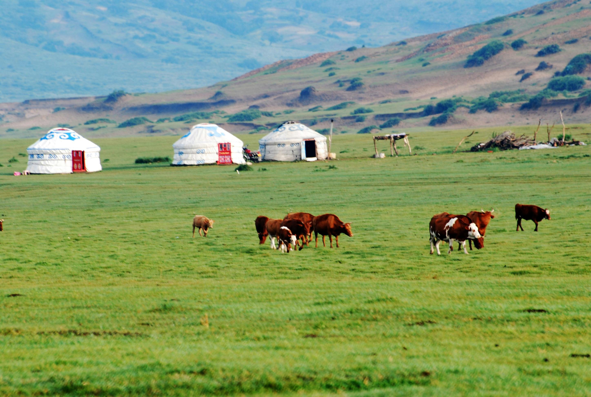

Mongolian cuisine is deeply rooted in nomadic traditions shaped by the vast steppes of Central Asia. Meals are simple, hearty, and designed to sustain life in extreme climates.
From traditional gers (yurts) to open-fire cooking methods, every dish reflects centuries of adaptation and survival.
View Menu